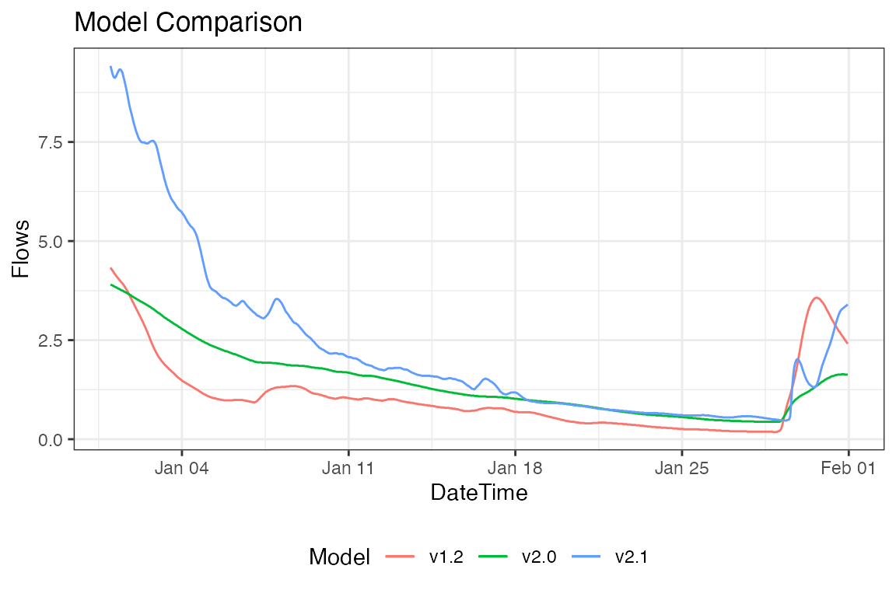
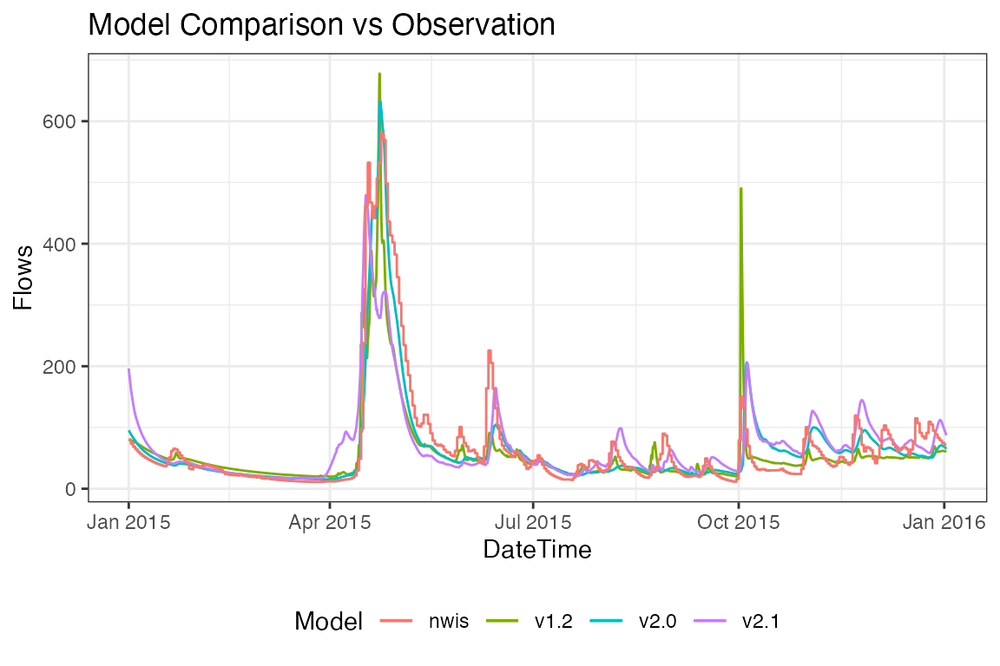

As part of a collaborative research effort, the multi-decadal historic simulation products from the NOAA National Water Model (versions 1.2, 2.0, and 2.1) have been reformatted and exposed through CUAHSI at the RENCI computing facility. This document outlines how to interact with this interface.
knitr::kable(get_nwm_meta(c(1.2, 2.0, 2.1)))| version | type | minDate | maxDate | ncml | varname |
|---|---|---|---|---|---|
| 1.2 | hydroshare | 1993-01-01 00:00:00 | 2017-12-31 23:00:00 | nwm_retro_full.ncml | feature_ids_v12 |
| 2.0 | hydroshare | 1993-01-01 00:00:00 | 2018-12-31 00:00:00 | nwm_v2_retro_full.ncml | feature_ids_v20 |
| 2.1 | USGS | 1979-02-02 18:00:00 | 2020-12-31 00:00:00 | nwm_v21_retro_full.ncml | feature_ids_v21 |
Data Extraction by …
Reanalysis data can be found with the readNWMdata function. The API requires users to specify NHD Common Identifier(s) (COMID), or NWIS site ID(s) for time series extraction.
NHD Catchment Identifier (COMID)
NWM reanalysis data can be extracted by NHD Catchment Identifier(s). The following code pulls the complete reanalysis data archive for COMID 17595383, a NHD reach near Goleta, California.
library(nwmTools)
system.time({
flows = readNWMdata(comid = 17595383)
})
#> user system elapsed
#> 0.133 0.063 1.108
head(flows)
#> comid dateTime flow_cms_v2.1
#> 1 17595383 1979-02-02 18:00:00 0.26
#> 2 17595383 1979-02-02 19:00:00 0.27
#> 3 17595383 1979-02-02 20:00:00 0.29
#> 4 17595383 1979-02-02 21:00:00 0.30
#> 5 17595383 1979-02-02 22:00:00 0.31
#> 6 17595383 1979-02-02 23:00:00 0.31
dim(flows)
#> [1] 367375 3USGS NWIS Site Number
Alternatively, data can be extracted using USGS NWIS site ID(s).
system.time({
flows = readNWMdata(siteID = 11120000)
})
#> user system elapsed
#> 2.846 0.194 4.028
head(flows)
#> comid dateTime siteID flow_cms_v2.1
#> 1 17595429 1979-02-02 18:00:00 11120000 0.52
#> 2 17595429 1979-02-02 19:00:00 11120000 0.52
#> 3 17595429 1979-02-02 20:00:00 11120000 0.53
#> 4 17595429 1979-02-02 21:00:00 11120000 0.55
#> 5 17595429 1979-02-02 22:00:00 11120000 0.55
#> 6 17595429 1979-02-02 23:00:00 11120000 0.55
dim(flows)
#> [1] 367375 4Query modification by …
The default behavior is to extract the complete, hourly time series in UTC, for the most current model version. Parameters allow data to be modified by data range, timezone and model version as follows:
date range
By default, the API extracts the complete flow record for each ID. This range can constrained by providing a startDate and/or endDate in the form of (“YYYY-MM-DD”).
system.time({
utc <- readNWMdata(comid = 101,
startDate = "2010-01-01",
endDate = "2010-01-31")
})
#> user system elapsed
#> 0.090 0.047 0.459
# Check time dimensions
dim(utc)
#> [1] 744 3
range(utc$dateTime)
#> [1] "2010-01-01 00:00:00 UTC" "2010-01-31 23:00:00 UTC"
head(utc)
#> comid dateTime flow_cms_v2.1
#> 1 101 2010-01-01 00:00:00 9.650000
#> 2 101 2010-01-01 01:00:00 9.620000
#> 3 101 2010-01-01 02:00:00 9.599999
#> 4 101 2010-01-01 03:00:00 9.599999
#> 5 101 2010-01-01 04:00:00 9.610000
#> 6 101 2010-01-01 05:00:00 9.599999time-zone
NWM output is recorded in UTC. Instead, users can specify a timezone. For our COMID in Goleta, California we can request data in US/Pacific time. Valid times zone can be found with OlsonNames().
pst = readNWMdata(comid = 101,
startDate = "2010-01-01",
endDate = "2010-01-31",
tz = "US/Pacific")
# Check time dimensions
dim(pst)
#> [1] 744 3
range(pst$dateTime)
#> [1] "2010-01-01 00:00:00 PST" "2010-01-31 23:00:00 PST"
head(pst)
#> comid dateTime flow_cms_v2.1
#> 1 101 2010-01-01 00:00:00 9.42
#> 2 101 2010-01-01 01:00:00 9.32
#> 3 101 2010-01-01 02:00:00 9.22
#> 4 101 2010-01-01 03:00:00 9.15
#> 5 101 2010-01-01 04:00:00 9.12
#> 6 101 2010-01-01 05:00:00 9.13Finally, we can plot the UTC return against the PST return:

Model versioning
The reanalysis product for versions 1.2, 2.0, and 2.1 of the NWM are available. By default the API extracts data from version 2.1, but all versions can be requested.
pst_vs = readNWMdata(comid = 101,
startDate = "2010-01-01",
endDate = "2010-01-31",
tz = "US/Pacific",
version = c(1.2, 2.0, 2.1))
model version vs obs
In addition to extracting records from mulitple model runs, data can be appended from observation in the case a USGS gage ID is supplied:
system.time({
data = readNWMdata(siteID = '01017000',
startDate = "2015-01-01",
endDate = "2016-01-01",
version = c(1.2, 2.0, 2.1),
addObs = TRUE)
})
#> user system elapsed
#> 6.775 0.416 17.347
In section 2, we will look at how we can facilitate COMID and USGS NWIS discovery. In section 3 we will look at some techniques to handle operational data, and in section 4, we will look at time aggregations and splitting.